🍣 รายละเอียดเมนูซูชิ Villa Market
1. ภาพรวมเมนู
2. การเตรียมข้าว
3. วิธีหั่น Salmon Sashimi
4. Tuna Sashimi
5. Salmon/Tuna Sashimi
6. ข้าวปั้นหน้าแซลมอน
7. ข้าวปั้นหน้าทูน่า
8. ข้าวปั้นหน้าเต้าหู้
9. ชุดซูชิ/ซาชิมิ
10. เบนโตะ ทูน่าซูชิ
11. เบนโตะไข่กุ้ง
12. Salmon Sushi Bento
13. เบนโตะไข่หวาน
14. เบนโตะแซลมอนซาชิมิ
15. มากิรวม (Maki Mix)
16. มากิไส้ปลาทูน่า
17. Crabstick Maki
18. Salmon Roe Maki
19. California Maki
20. California Salmon Roll
21. Kappa Maki
22. Salmon Roll Ikura
23. Salmon Roll EB
1. ภาพรวมเมนู Standard SUSHI
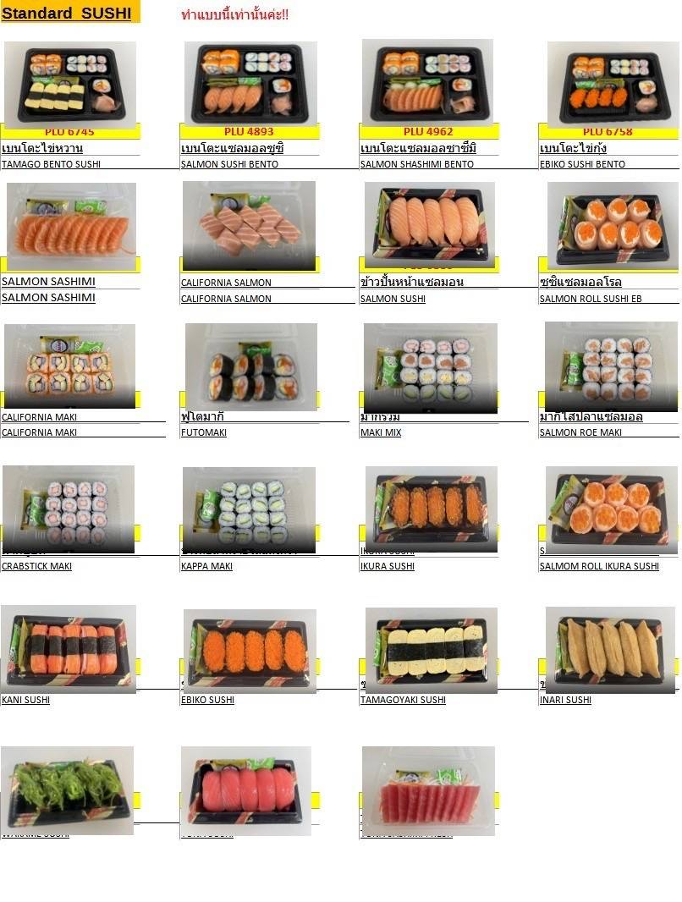
2. การหุงข้าวและอัตราส่วนน้ำส้มสายชู
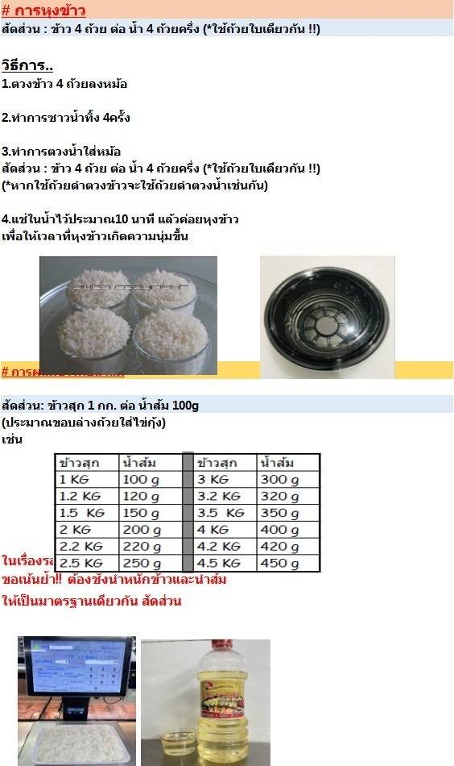
3. วิธีหั่น Salmon Sashimi (รวมหนัง 150g, 0.5 มิล)
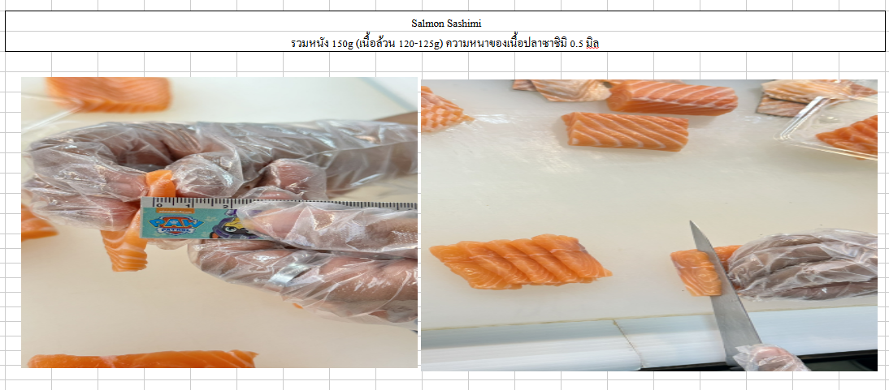
4. ซาชิมิ ทูน่า (Tuna Sashimi)
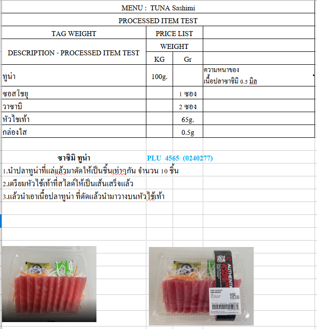
5. รายละเอียด Salmon/Tuna Sashimi (ทั่วไป)
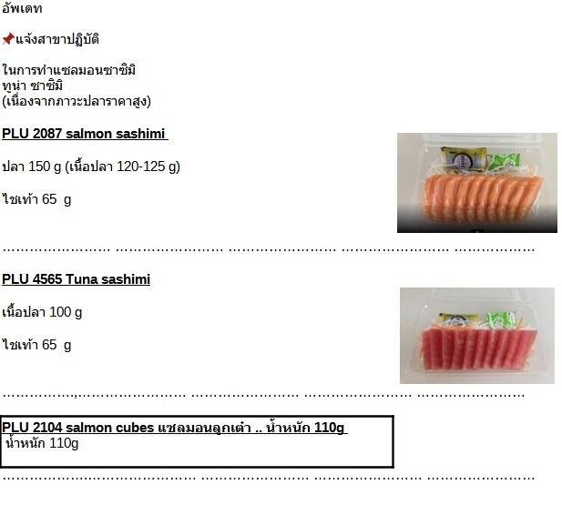
6. ข้าวปั้นหน้าแซลมอน (Salmon Sushi)
7. ข้าวปั้นหน้าทูน่า (Tuna Sushi)
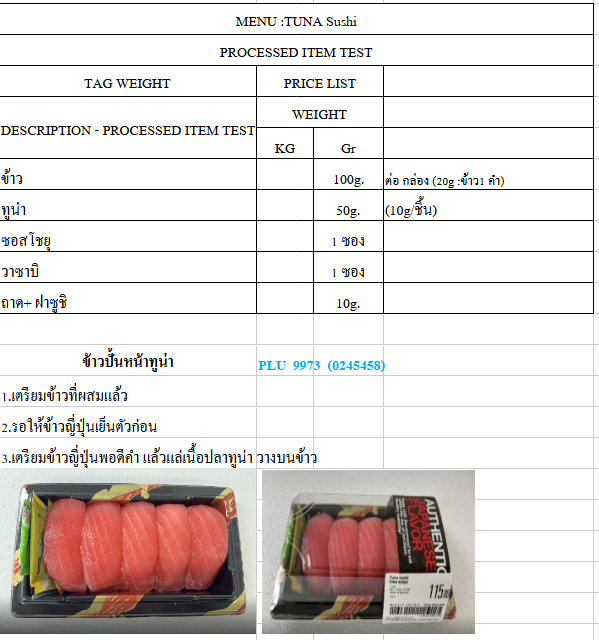
8. ข้าวปั้นหน้าเต้าหู้ (Inari Sushi)
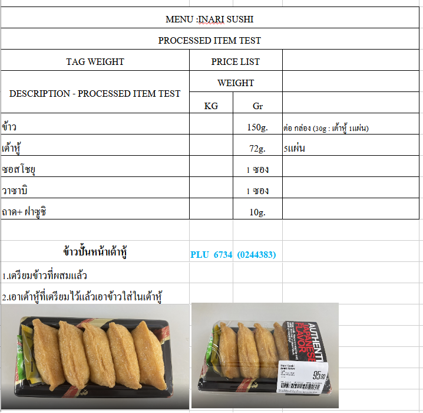
9. ชุด Sushi Party Set และ Sashimi Set
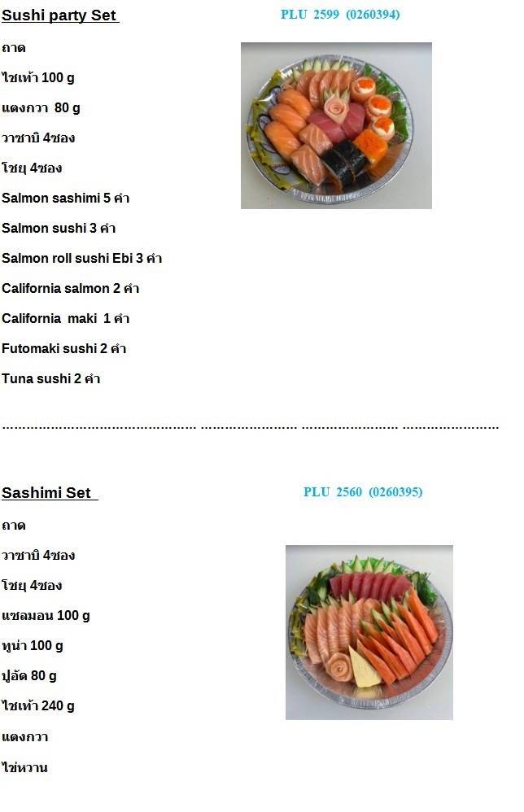
10. เบนโตะ ทูน่าซูชิ (Tuna Sushi Bento)
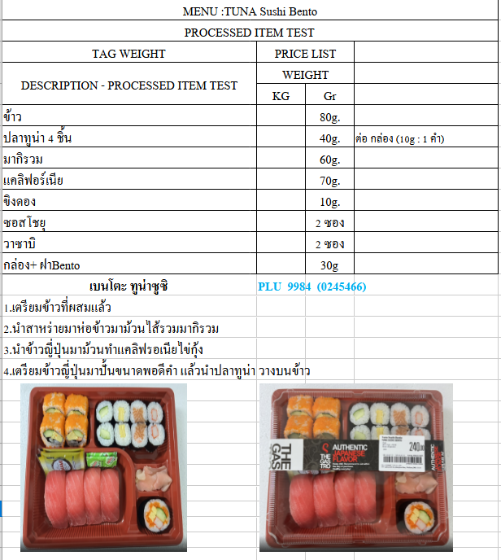
11. เบนโตะไข่กุ้ง (Ebiko Sushi Bento)
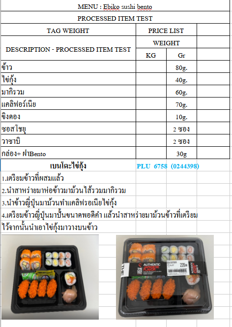
12. รายละเอียด Salmon Sushi Bento
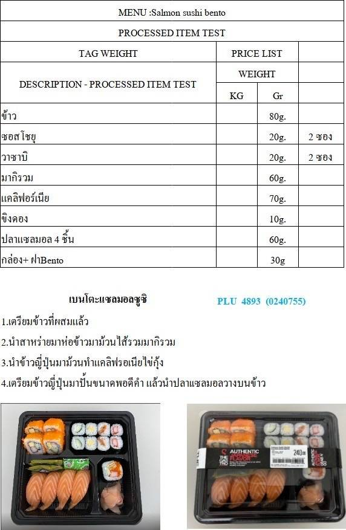
13. เบนโตะไข่หวาน (Tamago Bento Sushi)
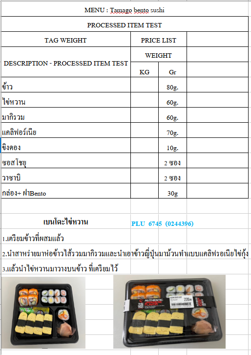
14. เบนโตะแซลมอนซาชิมิ (Salmon Sashimi Bento)
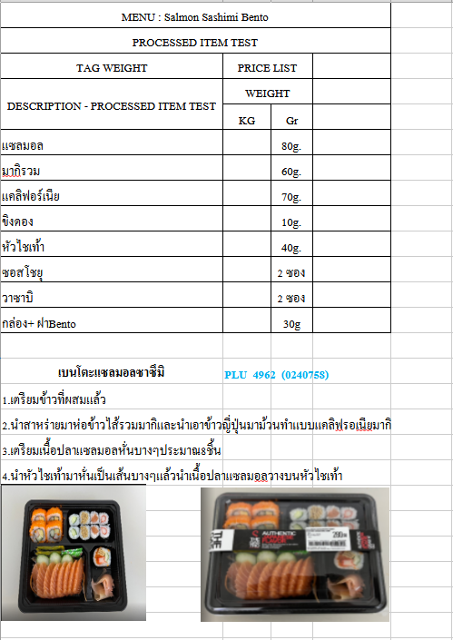
15. มากิรวม (Maki Mix)
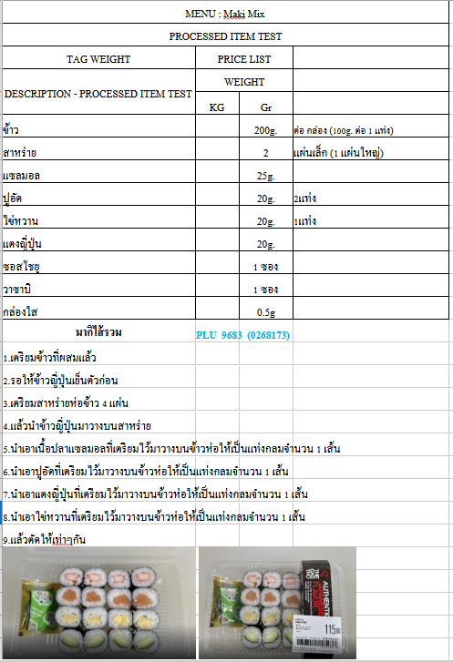
16. มากิไส้ปลาทูน่า (Tuna Maki)
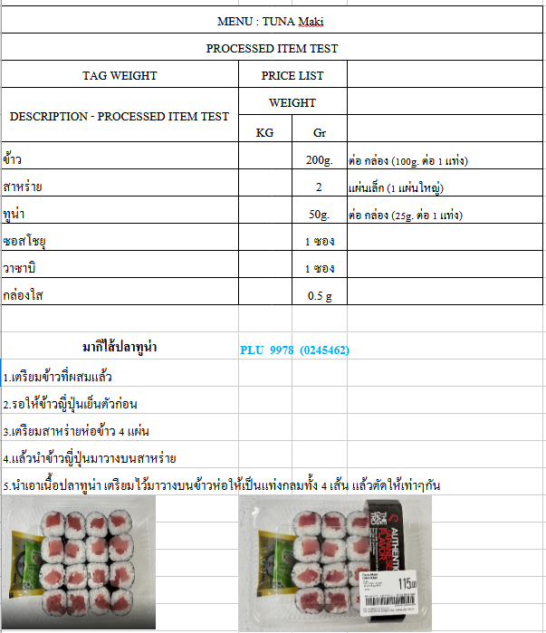
17. รายละเอียด Crabstick Maki
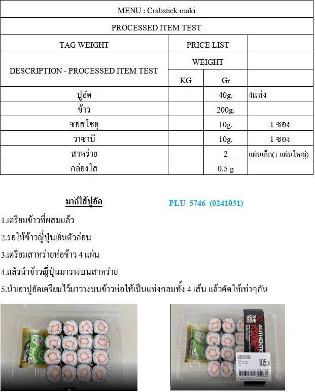
18. รายละเอียด Salmon Roe Maki
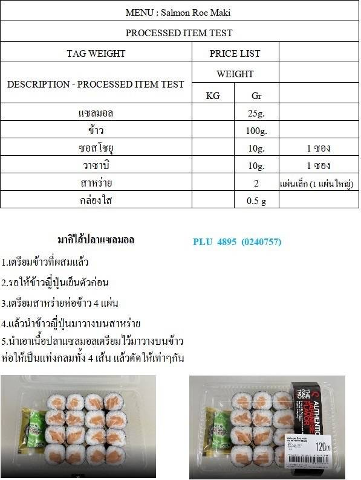
19. รายละเอียด California Maki
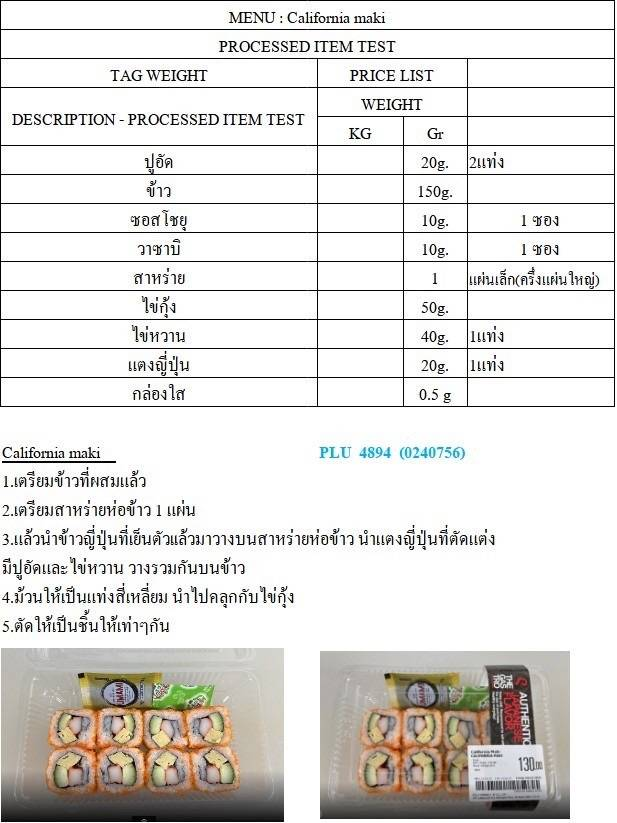
20. แคลิฟอร์เนียแซลมอนโรล
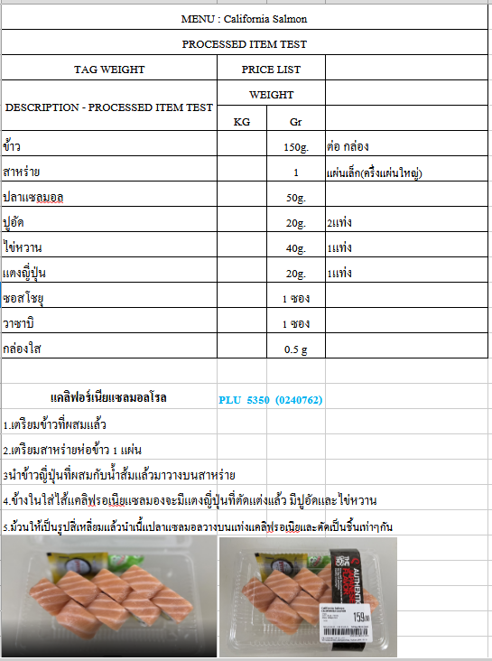
21. รายละเอียด Kappa Maki
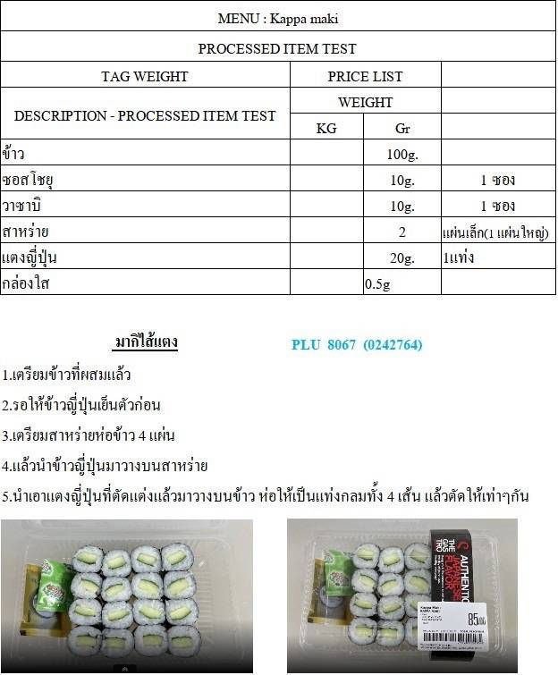
22. รายละเอียด Salmon Roll Ikura Sushi
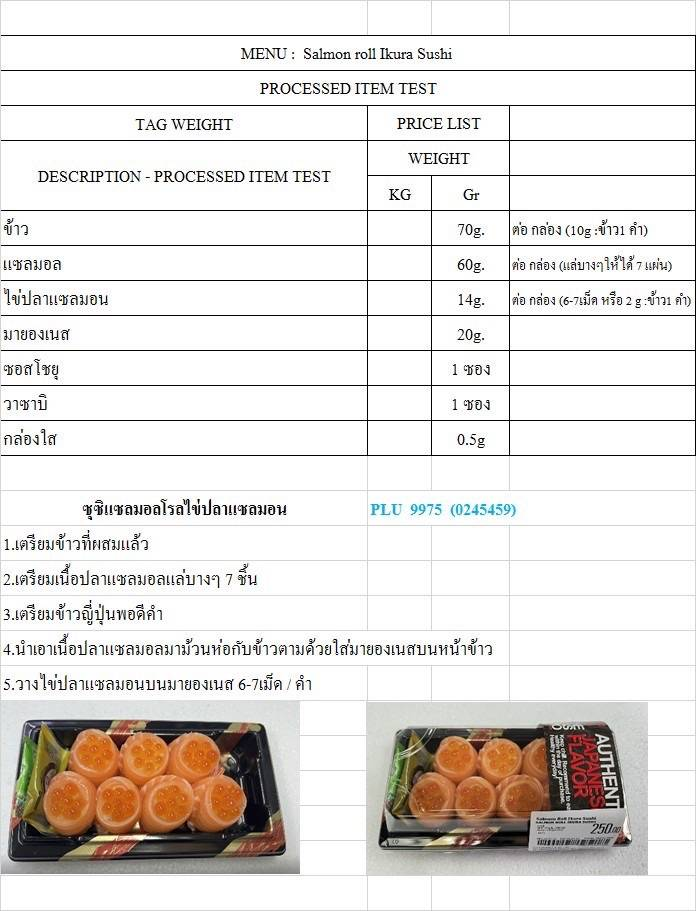
23. ซูชิแซลมอนโรลไข่กุ้ง
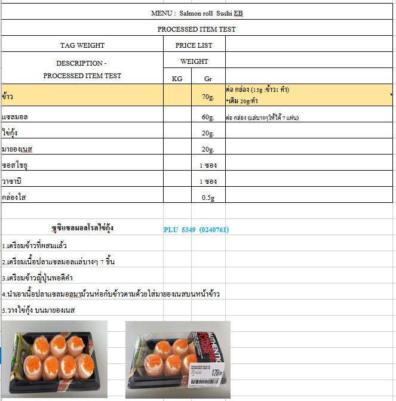